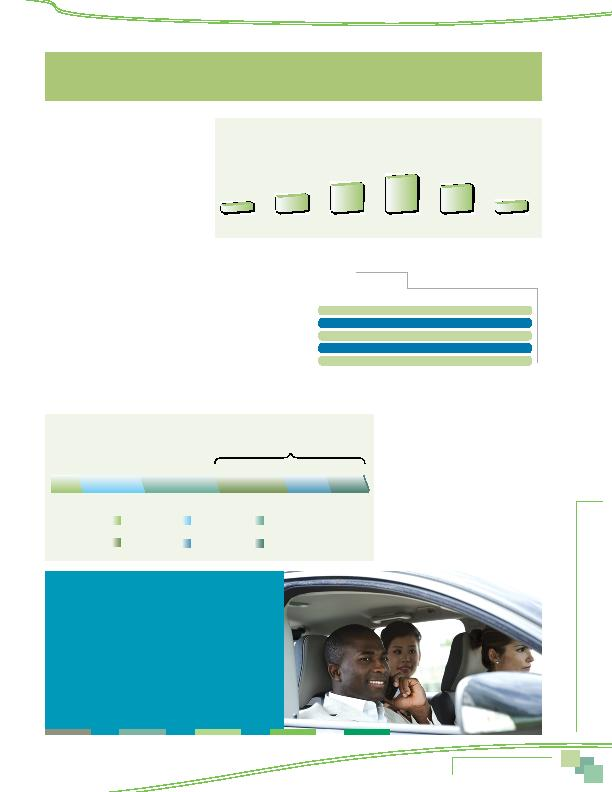

MWCOG-Comm
uter Conn
ecti
on
s-- 2010 State o
f th
e Comm
ute Report
6 7
Figure 63
Respondent Age Distribution
18-24 years
25-34 years
35-44 years
45-54 years
55-64 years
65 or more
years
4%
13%
24%
31%
22%
6%
Table 40
Ethnic Background
Ethnic Group
Percentage
White/Caucasian
53%
African-American
23%
Hispanic/Latino
11%
Asian
10%
Other/Mixed
3%
Figure 64
Annual Household Income
< $40,000
$40,000-$79,999
$80,000-$119,999
$120,000-$159,999
$160,000-$199,999
$200,000 +
8%
19%
24%
49%
22%
12%
15%
More than half (55%) of respondents were
between the ages of 35 and 54. About 17%
were younger than 35 and 28% were 55 years
or older.
Characteristics of the Sample
Interview respondents were asked
a series of questions about themselves,
including: age, ethnic background, sex,
income, household size, vehicle ownership,
home and work locations, type of employer,
size of employer, and occupation. These
results are presented first, to define
characteristics of the sample.
DEMOGRAPHIC CHARACTERISTICS
Age
As shown in Figure 63, more than half (55%) of respondents
were between the ages of 35 and 54. About 17% were younger
than 35 and 28% were 55 years or older.
Ethnic Background
As illustrated in Table 40, Caucasians and African-Americans
represented the two largest ethnic groups of survey respondents,
53% and 23% respectively. Hispanic and Latino respondents ac-
counted for about 11% and Asians/Pacific Islanders represented
10% of the total.
Sex
Most respondents were female (56%).
This was essentially the same percentage as
in the 2007, 2004, and 2001 SOC surveys.
Income
Figure 64 presents the distribution of
respondents' annual household income.
Nearly three-quarters reported incomes of
$80,000 or more and almost half (49%) had
incomes of $120,000 or more.
Household Size and Composition
CHARACTERISTICS OF THE SAMPLE